귀금속가공산업기사 (2002-08-11 기출문제)
1과목: 장신구디자인론
1. 다음 중 디자인의 의미와 다른 것은?
- 계획하여 만드는 일까지
- 렌더링과 전개도
- 실용적, 미적계획
- 이미지의 전개
(정답률: 알수없음)

2. 조선시대 3작 노리개의 특징에 관한 설명 중 잘못된 것은?
- 문자 삼작은 부(富), 금(金), 귀(貴)의 글자를 구리판으로 오려 달았다.
- 3작 노리개의 구조는 띠돈, 3작주체, 매듭, 술로 형성되었다.
- 나비 3작은 나비를 옥으로 만들어 세줄의 술에 단 것이다.
- 박쥐 3작은 도금한 박쥐를 아래위의 매듭사이에 꿴것으로 오복을 기원하는 뜻이 있다.
(정답률: 60%)
3. 다음 중 색상차가 큰 배색은?
- 보색끼리의 배색
- 난색끼리의 배색
- 한색끼리의 배색
- 중성색의 배색
(정답률: 91%)
4. 우리나라의 산업규격(KS)에서 채택하고 있는 정투상도법은?
- 제 1각법
- 제 2각법
- 제 3각법
- 제 4각법
(정답률: 100%)
5. 다음 그림의 정투상도가 맞는 것은?
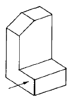
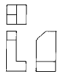
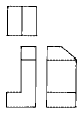
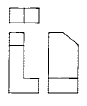
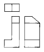
(정답률: 알수없음)
6. 다음 그림과 같은 반지(RING)의 형태는?
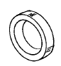
- 평타반지
- 갑환반지
- 인태반지
- 보석반지
(정답률: 91%)
7. 형태에 대한 설명 중 올바른 것은?
- 현실적 형태의 성격이 가장 강한 것은 1차원적 형태이다.
- 형태의 방향감은 대칭형일때 가장 강하다.
- 순수형태는 모든 형태를 표현하는 기초이다.
- 질감은 빛에 의하여 인지되지만, 양감은 빛과는 무관하다.
(정답률: 알수없음)
8. 19C 기계생산에 의한 제품을 부정하고, 수공예 제품으로의 귀환을 요구하는 공예운동으로 윌리암 모리스(William morris)가 주장한 것은?
- 바우하우스(Bauhaus)
- 미술공예운동(Art and craft movement)
- 아르누보(Art nouveau)
- 아르데코(Art Deco)
(정답률: 알수없음)
9. 명도차가 큰 배색에서 나타나는 지각적인 결과를 바르게 설명한 것은?
- 어둡고 무겁다.
- 온화하고 순수하다.
- 밝고 맑으며 경쾌하다.
- 강하고 명쾌하며 적극적이다.
(정답률: 60%)
10. 다음 중 따뜻한 감을 느낄 수 있는 색상은?
- 흰색
- 파랑
- 녹색
- 주황
(정답률: 90%)
11. 굿 디자인(good design)의 조건과 거리가 먼 것은?
- 합목적성
- 경제성
- 생산성
- 독창성
(정답률: 64%)
12. 전통 한옥에서 방의 크기, 문의 위치, 문지방의 높이 등은 인체와의 어떠한 부분을 고려한 것인가?
- 리듬
- 대칭
- 비례
- 비대칭균형
(정답률: 알수없음)
13. 고구려시대의 귀걸이에 대한 설명 중 올바른 것은?
- 순금 공예의 주류를 이루고 있으며, 태환식과 세환식으로 구분된다.
- 귀걸이의 기본적인 형태는 중간식의 투각 구형이고 수하식은 심엽형으로 되어 있다.
- 누금 세공한 것이 많으며, 부부총에서 출토된 금제태환 귀걸이가 그 예이다.
- 청동기에 모두 도금하여 만들었는데 세환식에 간단한 삼각뿔 모양의 장식이 달려있다.
(정답률: 30%)
14. 어떤 색깔의 자극이 제거된 후에도 잠시 원자극이 남아있는 현상은?
- 동화 현상
- 정의 잔상
- 부의 잔상
- 색의 대비
(정답률: 알수없음)
15. 색료 혼합의 결과가 잘못된 것은?
- 자주(M) + 노랑(Y) = 빨강(R, red)
- 노랑(Y) + 청록(C) = 녹색(G, green)
- 자주(M) + 청록(C) = 파랑(B, blue)
- 자주(M) + 노랑(Y) + 청록(C) = 흰색(W, White)
(정답률: 91%)
16. 장신구 렌더링에 가장 효과적인 투시는?
- 1점 투시
- 2점 투시
- 3점 투시
- 4점 투시
(정답률: 82%)
17. 우리나라 교육부가 채택하고 있는 표준색상은 어느 학자의 표색계인가?
- 오스트발트
- 헤링
- 먼셀
- 영· 헬름홀즈
(정답률: 92%)
18. 장신구 디자인의 조건 중 합목적성을 설명한 것은?
- 반지는 손가락에 끼워지기 편리하게 디자인한다.
- 한정된 경비로 최상의 장신구를 제작해야 한다.
- 디자이너의 개성이 표현되어야 한다.
- 적절한 미적 표현이 이루어져야 한다.
(정답률: 알수없음)
19. 좋은 색의 선택 및 결정 방법 중 좋은 느낌의 색에 대한 설명과 거리가 먼 것은?
- 제품에 적합한 것
- 개성이 있는 것
- 환경에 적합한 것
- 고안하기 좋은 것
(정답률: 알수없음)
20. 다음 형상기호 표기 중 잘못된 것은?
- 지름 50mm는 φ50으로 표기한다.
- 한변이 50mm인 정사각형은 50으로 표기한다.
- 두께 50mm는 t50으로 표기한다.
- 지름 50mm인 구(球)는 구R50으로 표기한다.
(정답률: 알수없음)
2과목: 보석재료 및 가공기법
21. 테이블 게이지의 최소 측정범위는?
- 1/10 mm
- 1/20 mm
- 1/100 mm
- 1/200 mm
(정답률: 73%)
22. 파세팅 연마의 종류 중 마르셀 톨코우스키에 의해 발명된 것으로 최대의 브릴리언시, 산란, 신틸레이션을 얻을 수 있는 연마 형태는?
- 로즈 컷
- 시저스 컷
- 잉글리쉬 스타 컷
- 표준 브릴리언트 컷
(정답률: 알수없음)
23. 보석 검사용 표준루페의 배율은?
- 5배
- 10배
- 20배
- 40배
(정답률: 알수없음)
24. 다이아몬드의 굴절률은?
- 1.54
- 2.15
- 2.42
- 2.95
(정답률: 알수없음)
25. 다음 결함 중 블래미쉬가 아닌 것은?
- 피트
- 핀포인트
- 스크래치
- 닉
(정답률: 82%)
26. 다음 연마제의 재질 중 보석과 초경합금 연마에 가장 적합한 것은?
- A (갈색 산화 알루미늄)
- WA (백색 산화 알루미늄)
- C(흑색 탄화규소:흑색 실리콘카바이드)
- GC(녹색 탄화규소:녹색 실리콘카바이드)
(정답률: 50%)
27. 경도에 관한 설명 중 잘못된 것은?
- 모오스 경도계는 모오스가 보석의 깨어짐의 순서를 정한것이다.
- 활석은 경도 1로서 쉽게 부스러진다.
- 보석의 세계에서 경도의 척도는 수정이다.
- 카보런덤은 다이아몬드 다음의 경도를 가지며 공업용 연마제로 사용하고 있다.
(정답률: 30%)
28. 라운드 브릴리언트 컷이 다이아몬드의 대표적인 컷이 된 이유로 적당치 못한 설명은?
- 팬시 컷보다 브릴리언시 및 디스퍼션이 높다.
- 팬시 컷과 브릴리언트 컷의 중량이 같을 경우 브릴리언트 컷이 커보인다.
- 보석의 대량생산에 적합하다.
- 클레러티가 낮고 짙은 스톤의 가공에 적당하다.
(정답률: 39%)
29. 다음 중 칼세도니의 가장 올바른 연마 형태는?
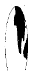
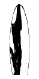
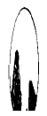
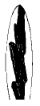
(정답률: 알수없음)
30. 커런덤과 크리소베릴과 같은 단단한 보석에 필요한 연마판은?
- 컨디셔닝 폴리싱 연마판
- 다이아몬드 차아지 연마판
- 루사이트 연마판
- 나무 연마판
(정답률: 알수없음)
31. 다음과 같이 음각된 보석의 명칭은?
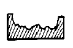
- 큐벳
- 셰비
- 카메오
- 인탈리오
(정답률: 알수없음)
32. 구슬을 연마할 때 카보런덤과 물의 적당한 비율은?
- 30 : 70
- 40 : 60
- 50 : 50
- 60 : 40
(정답률: 알수없음)
33. 코런덤에 해당되는 보석은?
- 에메랄드
- 사파이어
- 아콰마린
- 알렉산드라이트
(정답률: 54%)
34. 다음 중 열을 가하는 작업에 적당한 보석은?
- 오팔
- 호박
- 루비
- 에메랄드
(정답률: 알수없음)
35. 천연보석과 동일한 화학성분 구조를 가진 보석은?
- 모조진주
- 합성보석
- 모조보석
- 처리보석
(정답률: 알수없음)
36. 표준 브릴리언트 형에서 퍼빌리언에 해당하지 않는 면(facet)은?
- 베젤(bezel)면
- 아랫거들(lower girdle)면
- 퍼빌리언(pavilion)
- 큐렛(culet)
(정답률: 70%)
37. 다음 중 묘안석에 가장 알맞는 연마형은?
- 단순 카보션
- 오목 카보션
- 이중 카보션
- 랜틸 카보션
(정답률: 47%)
38. 다음 중 포일백한 유리를 뜻하는 것은?
- 스트래스
- 크리스탈
- 라인스톤
- 세라믹
(정답률: 40%)
39. 원석의 표면에 형태를 그리는 도구로서 알맞는 것은?
- 흑연봉
- 알루미늄봉
- 분필
- 석면봉
(정답률: 알수없음)
40. 우리나라 지환번이 15호 일때의 직경은?
- 13mm
- 15mm
- 18mm
- 20mm
(정답률: 알수없음)
3과목: 귀금속재료 및 가공기법
41. 방부작용이 있어 외용으로는 식수제, 세안료 등으로 쓰이고 공업적으로는 금속류의 융제 또는 청정 재료로 쓰이는 약품은?
- 산화크롬
- 붕사
- 황산
- 질산
(정답률: 92%)
42. 조각정으로 음각새기기 작업을 할 때 날 끝이 잘 부러졌을 경우 이를 개선하기 위한 올바른 열처리 작업은?
- 담금질(quenching)
- 뜨임(tempering)
- 풀림(annealing)
- 불림(normalizing)
(정답률: 알수없음)
43. 백금(Pt)의 적합한 열풀림 온도(℃)는?
- 300∼400
- 450∼500
- 600∼700
- 800∼900
(정답률: 알수없음)
44. 귀금속의 회수 및 분석에 쓰이는 왕수(王水)는 금과 은의 용도에 따라 조성하는 비율이 다르다. 은을 녹이는 왕수의 비율은?
- 질산:염산=1:3
- 염산:질산=1:3
- 황산:질산=1:3
- 황산:염산=1:3
(정답률: 70%)
45. 작업도중 드릴날이 부러지는 요인과 관계 없는 것은?
- 드릴날이 휠 경우
- 드릴밥이 구멍에 너무 많이 쌓일경우
- 일감이 잘 고정되어 흔들리지 않는 경우
- 드릴날의 길이가 구멍의 깊이에 비하여 긴 경우
(정답률: 60%)
46. 빗금선 또는 바둑판모양의 선을 새기거나 요철을 내고자 할 때 많이 사용하는 조각정은?
- 평정
- 삼각정
- 망사정
- 골정
(정답률: 알수없음)
47. 일반적으로 금속을 합금하면 성질이 개선되는데, 이와 거리가 먼 것은?
- 색이 아름다워지고, 우수한 성질이 나타난다.
- 강도와 경도가 낮아진다.
- 주조성 및 내산성이 좋아진다.
- 용융점이 낮아지고 전기저항이 커진다.
(정답률: 84%)
48. 안전에 관한 색채 통칙(KSA)에 의한 적용이 틀린 것은?
- 백색 - 통로, 정리정돈, 글씨(보조용)
- 녹색 - 진행, 구호, 구급, 안전
- 황색 - 위험, 안전지대, 금지
- 적색 - 방호, 정지, 금지
(정답률: 84%)
49. 평면 줄질을 위한 방법으로 적절치 못한 것은?
- 곡진법
- 직진법
- 사진법
- 병진법
(정답률: 70%)
50. 칠보유약은 어느 정도의 입도로 분쇄하여 사용하는 것이 가장 좋은가?
- 50 mesh
- 100 mesh
- 15 mesh
- 65 mesh
(정답률: 70%)
51. 주조 작업시 금 14K(황색)와 왁스와의 무게의 비율은?
- 10.07 : 1
- 13.07 : 1
- 9.5 : 1
- 15 : 1
(정답률: 알수없음)
52. 금속의 표면처리 기법 중 상감부분을 안밖으로 표현 하는 기법은?
- 절상감
- 면상감
- 선상감
- 부식상감
(정답률: 50%)
53. 백금을 땜하는 것을 피납이라고 하는데 다음 중 피납의 올바른 조성 금속은?
- 금 + 로듐
- 백금 + 로듐
- 금 + 팔라듐
- 백금 + 팔라듐
(정답률: 알수없음)
54. 다음 합금순서 내용을 바르게 정리한 것은?
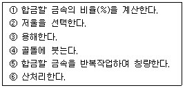
- ② - ① - ③ - ④ - ⑤ - ⑥
- ② - ① - ④ - ⑤ - ⑥ - ③
- ② - ③ - ① - ⑤ - ⑥ - ④
- ② - ① - ⑤ - ③ - ④ - ⑥
(정답률: 알수없음)
55. 세공 작업에서 소다수의 사용시기는?
- 세공작업 중 땜질 할 때
- 잡물을 용해 할 때
- 세공 최종단계에서 탈지 할 때
- 세공함량의 농도를 측정 할 때
(정답률: 알수없음)
56. 정밀 주조작업시 왁스 모형 제작에 쓰이는 왁스 성질 중 틀리는 것은?
- 69-80℃정도의 용해 온도 범위
- 큰 수축율
- 상온에서 강도유지
- 주형과 분리가 용이
(정답률: 90%)
57. 귀금속의 회수방법 중 습식법이 아닌 것은?
- 용융법
- 질산분석법
- 왕수법
- 황산분석법
(정답률: 알수없음)
58. 순은 70%에 구리 30%정도로 합금된 은을 열풀림을 하면 색깔이 몹시 검다. 이때에 검은때를 제거하는 방법은?
- 묽은 염산에 넣어서 제거한다.
- 묽은 황산에 넣어서 제거한다.
- 묽은 불산에 넣어서 제거한다.
- 묽은 양잿물에 넣어서 제거한다.
(정답률: 알수없음)
59. 귀금속 용접시 사용되는 프로판가스의 특성 중 잘못된 것은?
- 액체일 때는 물보다 약 0.5배 무겁다.
- 비중이 1.5로 공기보다 무겁다.
- 액체에서 기체로 되면 부피는 약 250배로 팽창된다.
- 불포화 탄화수소이므로 분해, 폭발의 위험이 크다.
(정답률: 40%)
60. 금속이 용해되어 액체상태로 되었다가 더 높은 온도에서 기체로 변태 하였을 때, 변태가 생기는 온도는?
- 비점(boiling point)
- 용융점(melting point)
- 응고점(solidification point)
- 응고액의 산화(oxidation)
(정답률: 알수없음)
4과목: 보석감별 및 감정
61. 14금(14K)이하의 금속을 감정하는데 필요한 약품은?
- HCl
- HNO3
- H2SO4
- 왕수
(정답률: 알수없음)
62. 투명도 등급에 있어서 GIA방식에 따라 적색과 녹색으로 동시에 작도되는 것은?
- Int.Gr
- Ndl
- Cv
- Cld
(정답률: 알수없음)
63. 다음 중 경도 6을 가진 보석으로 긁을 수 있는 보석의 경도는?
- 5
- 7
- 8
- 10
(정답률: 알수없음)
64. 금 75%, 은 21%, 동 4%로 합금을 할때 느껴지는 색상은?
- 연한 녹황색
- 황색
- 짙은황색
- 옅은적색
(정답률: 60%)
65. 대부분의 경우 엑스트라면(extra facet)은 어느 것으로 항상 취급되는가?
- 연마흔(polishing marks)
- 균형의 세부사항
- 프로포션(proportion)변화
- 클레러티 등급 결정 요소
(정답률: 알수없음)
66. 다음 중 보석전문가의 요건과 비교적 거리가 먼 것은?
- 보석학적인 지식
- 예술적인 감각
- 상업적 가치에 대한 지식
- 고객 심리분석학적 능력
(정답률: 알수없음)
67. 비중액 속에 들어있는 지시석과 비중액이 일치하는 것은?
- 2.57 - 래브라도라이트· 칼세도니
- 2.62 - 칼세도니· 쿼츠
- 2.67 - 합성에메랄드· 칼사이트
- 3.⑤ - 핑크투어멀린· 녹색투어멀린
(정답률: 36%)
68. 다음 기구 중 다이아몬드 감정에 사용되지 않는 기구는?
- 옵티바이저
- 자외선 형광기
- 리버리지게이지
- 컬러 필터
(정답률: 50%)
69. 다이아몬드의 표면을 침투한 작고 얕은 구멍을 가리키는 것은?
- 칩(Chip)
- 니들(Needle)
- 캐비티(Cavity)
- 핀 포인트(Pin point)
(정답률: 알수없음)
70. 순금보다는 합금이 장신구에 많이 사용되는 주된 이유는?
- 순금의 색상이 매력적이 아니므로
- 순금이 비싸고 부식이 잘되므로
- 순금이 비싸고 너무 무르기 때문에
- 순금이 너무 단단하여 공임이 많이 들기 때문에
(정답률: 알수없음)
71. 다음 굴절계 곡면(스포트)법으로 굴절율을 측정하는 방법에 대한 설명 중 잘못된 것은?
- 가장 잘 연마된 부분을 사용해서 측정한다.
- 극히 소량의 굴절액을 사용한다.
- 50:50법 또는 명멸법을 사용한다.
- 굴절계의 확대 렌즈를 사용해서 더욱 정확하게 측정한다.
(정답률: 60%)
72. 특수효과를 약자로 사용할 때 연결이 잘못된 것은?
- 스타 효과 : A
- 캐츠아이 효과 : C
- 오팔 효과 : CC
- 어벤츄레센스 : AV
(정답률: 알수없음)
73. 편광기는 몇 개의 편광판으로 구성되어 있는가?
- 1개
- 2개
- 3개
- 4개
(정답률: 73%)
74. 빛이 간접적으로 도달하게 하는 방법으로 다이아몬드의 표면및 내부 특징을 능률적으로 관찰 할 수 있는 효과적인 조명 방법은?
- 명시야 조명
- 암시야 조명
- 두상 조명
- 확산 조명
(정답률: 79%)
75. 천연진주와 양식진주를 구별하는 방법은?
- 이빨로 긁어본다.
- 질산으로 문질러본다.
- X-ray로 투시해본다.
- 굴절계로 굴절률을 측정한다.
(정답률: 알수없음)
76. 비중 1.12인 염수에서 합성석 여부를 검사할 수 있는 것은?
- 유리
- 호박
- 터키석
- 칼세도니
(정답률: 알수없음)
77. 크리소 베릴의 변종인 알렉산드라이트는 백열광에서 어떤색으로 나타나는가?
- 적색
- 녹색
- 보라색
- 형광색
(정답률: 58%)
78. 골드 필드(G.F.)제품 중에서 각인의 표시가 금지되어 있는 품위(品位)의 한계는?
- 18K
- 14K
- 10K
- 9K
(정답률: 알수없음)
79. 다음 보석 감정의 색상 표시 약어 중 맞는 것은?
- C - 무색
- Br - 청색
- Gr - 녹색
- Vp - 보라색
(정답률: 알수없음)
80. 다음 중 백색금의 합금은?
- 금 - 은 - 아연
- 금 - 은 - 구리
- 금 - 은 - 구리 - 아연
- 금 - 팔라듐 - 은
(정답률: 75%)